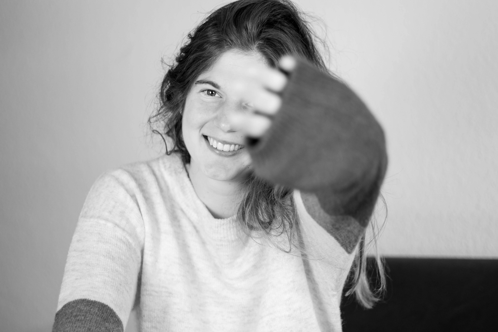

Hey! Ich bin Samira
Deine Fotografin in Lübeck und Karlsruhe

Mit 8 Jahren habe ich meine erste eigene Digitalkamera geschenkt bekommen und seither nicht mehr aufgehört zu fotografieren. Jetzt bin ich 21 Jahre und mache meinen Master in der Informatik. Mit der Fotografie aufzuhören kam für mich jedoch nie in Frage. Die Begeisterung in Menschen zu sehen, die erkennen, dass sie eigentlich gar nicht unfotogen sind, ist einfach zu schön. Portraits und Paarfotos sind immer ein tolles Ereignis - sowohl für euch als auch für mich. Und auch Paare bei ihrem wichtigsten Tag in ihrem Leben - ihrer Hochzeit - zu begleiten, ist eine große Ehre und macht mir eine Menge Freude!
Da ich Hauptberuflich als Software-Entwickler arbeite, bin ich zeitlich sehr flexibel. Auf hervorragend Leistung musst du nicht verzichten! Und auch meine Ausstattung ist top: Ich fotografiere mit meiner Canon EOS R, üblicherweise 35mm, 50mm oder 85mm, und arbeite mit der renomierten Adobe-Software zur Bildbearbeitung.
Du hast weitere Fragen zu mir? Dann meld dich einfach!